PPTX에서 추출된 총 16개 이미지 에셋 · 슬라이드별 매핑 · 웹사이트 활용 가이드
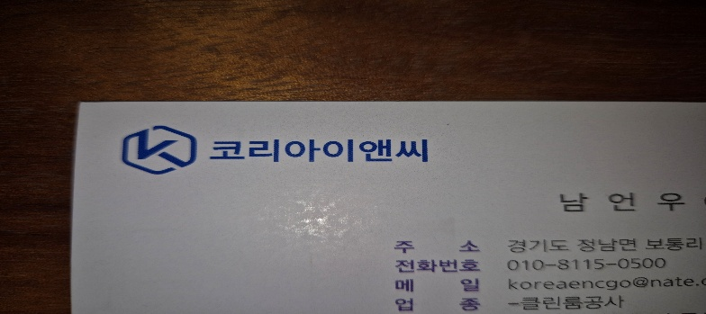
코리아이앤씨 로고와 명함 이미지. 로고는 벡터 재작업이 필요할 수 있음. 네비게이션 바, 푸터, 파비콘에 활용.
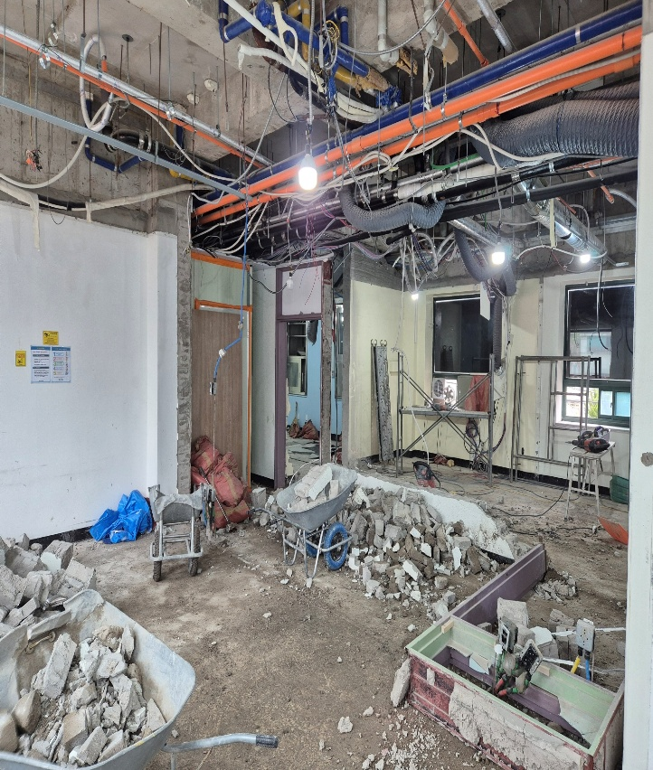
콘크리트 바닥 철거, 천장 배관 노출, 폐자재 적재. Before-After 슬라이더의 Before 이미지로 활용.
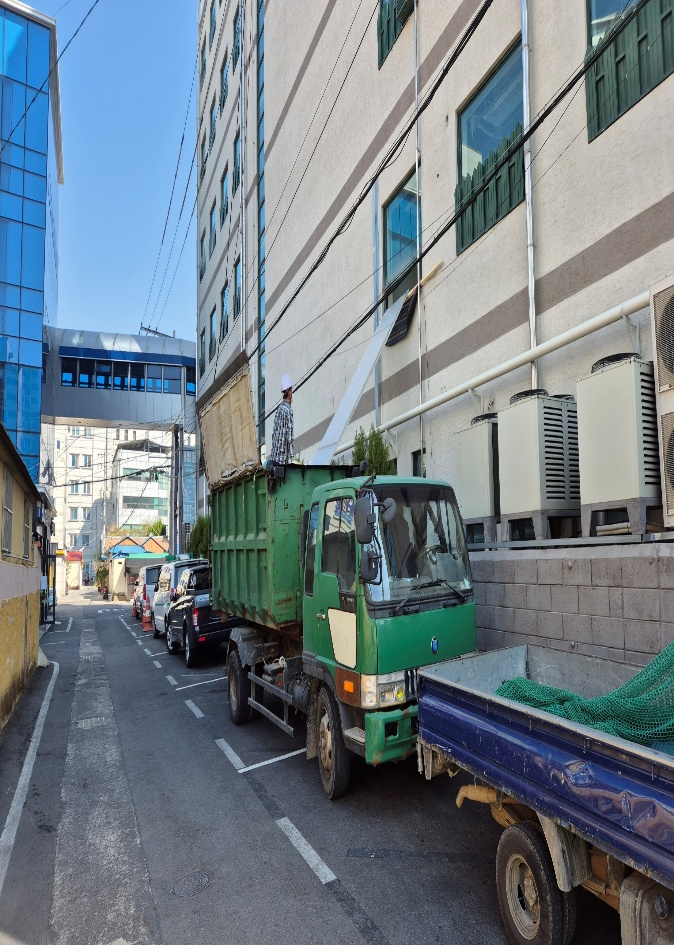
건물 외부 폐기물 반출 트럭. 공정 프로세스 "철거" 단계 설명에 활용.
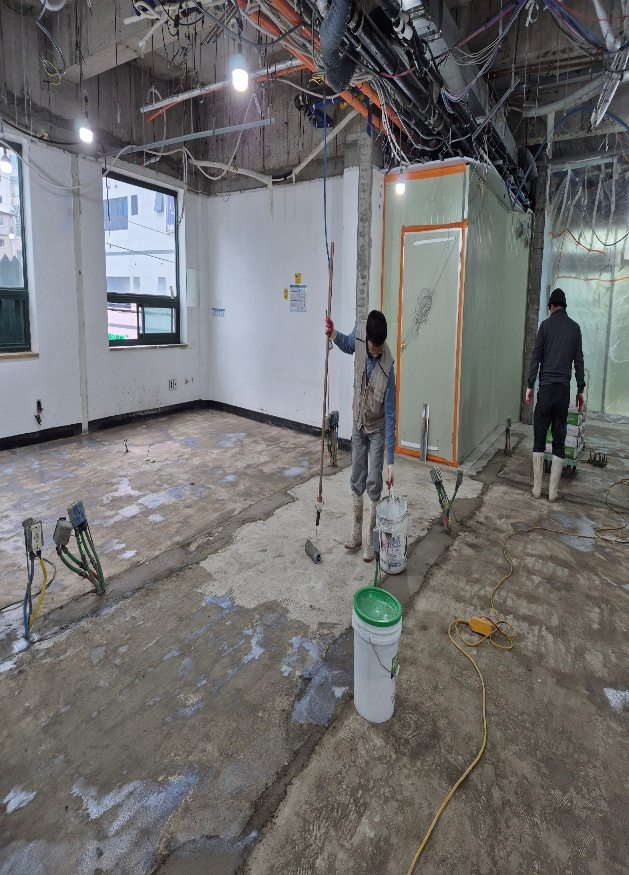
작업자 2인이 바닥 하도 작업 진행 중. 공정 "바닥 공사" 단계 + 전문가 작업 모습 활용.
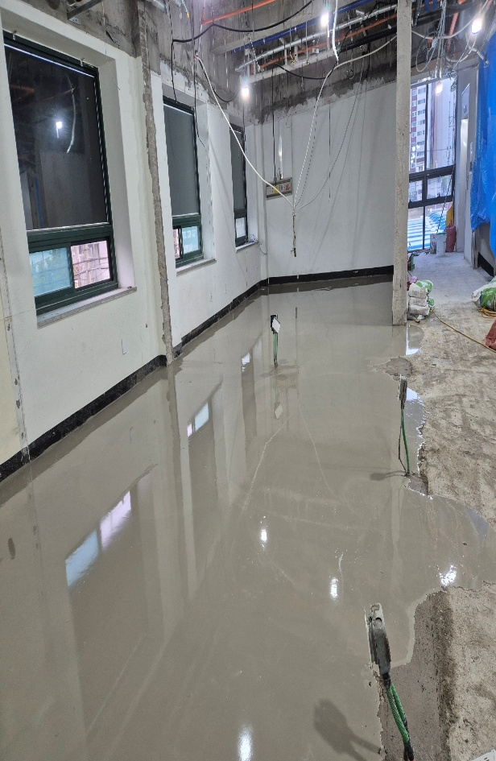
셀프레벨링 작업 완료 직후 모습. 매끈한 표면이 전문 기술력을 보여줌. 공정 단계 설명에 활용.
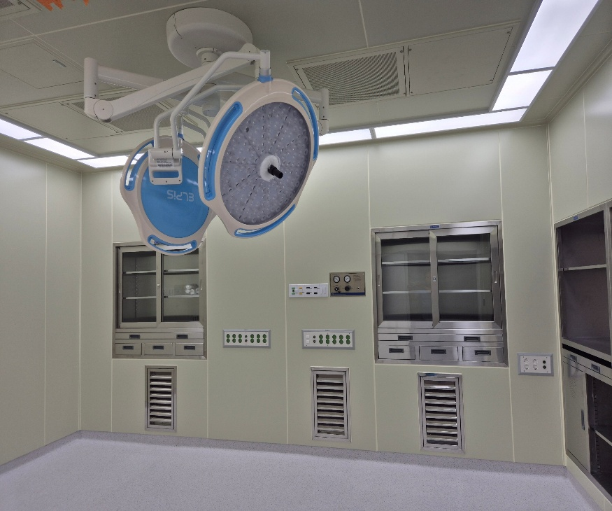
수술등(무영등) 클로즈업, 스테인리스 수납장, 가스패널. Hero 섹션 배경 or 서비스 페이지 메인 이미지 후보.
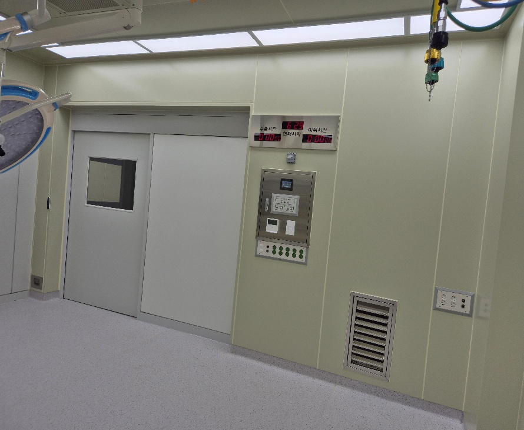
자동 슬라이딩 도어, 수술시간/마취시간 디지털 타이머, 제어판. 기술적 디테일 강조용.
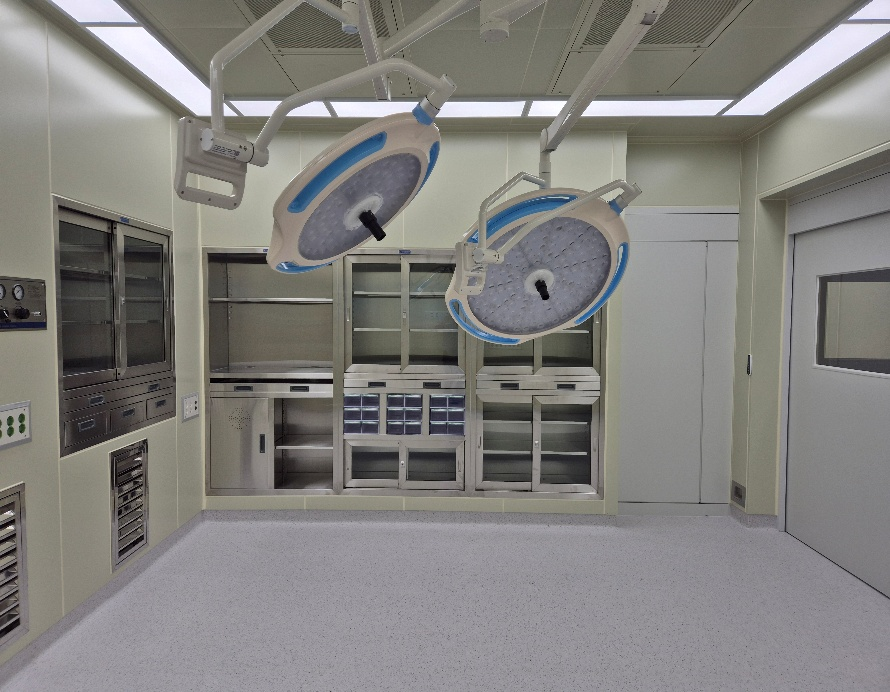
쌍 무영등 + 수납장 전체 전경. 공간감이 잘 살아 있어 Hero 배경 이미지 1순위 후보.
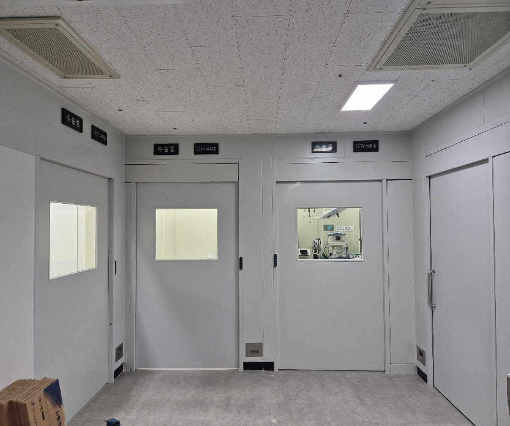
수술실 복도 출입문(수술실1,2 표시), CCTV. 수술실 외부 환경, 안전/보안 강조용.
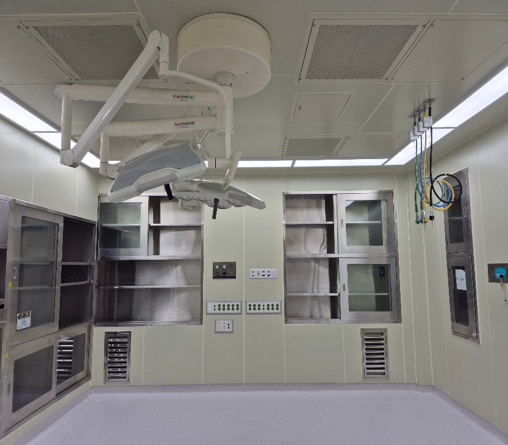
수술등 + 의료가스 배관(산소, 질소 등 컬러코딩) + 수납장. 기술 스펙 설명 이미지.
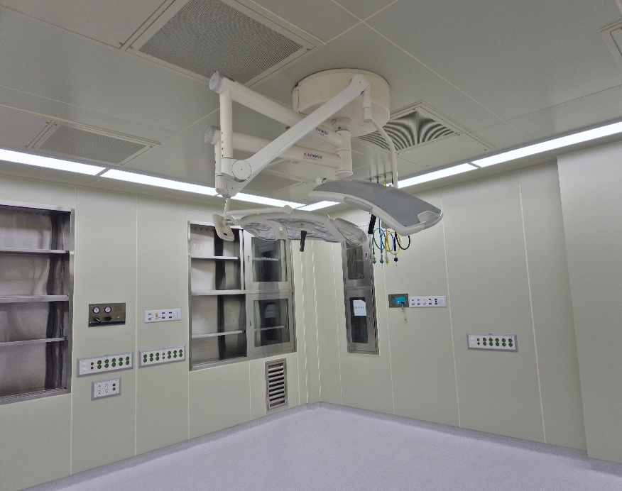
수술등 측면 앵글. 수납장, 콘센트 패널 디테일. 서비스 안내 페이지 보조 이미지.
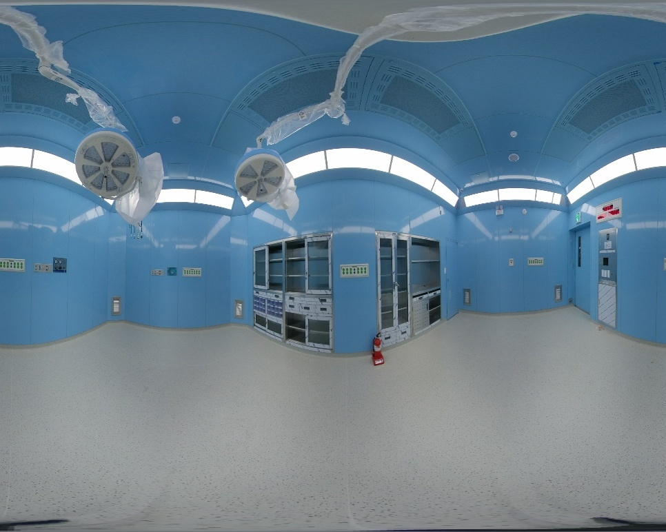
360도 파노라마 촬영. 공간 전체를 한눈에 보여줌. 시공사례 페이지 인터랙티브 뷰 활용 가능.
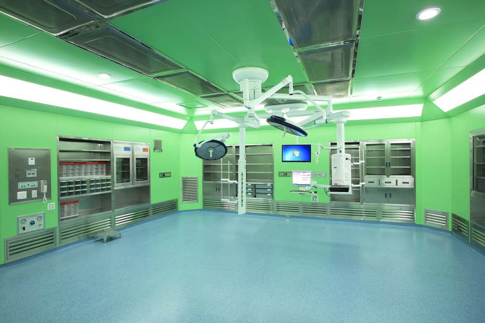
선명한 그린 수술실, 모니터 내장, 블루 바닥. 가장 임팩트 있는 완공 사진. Hero 배경 후보.
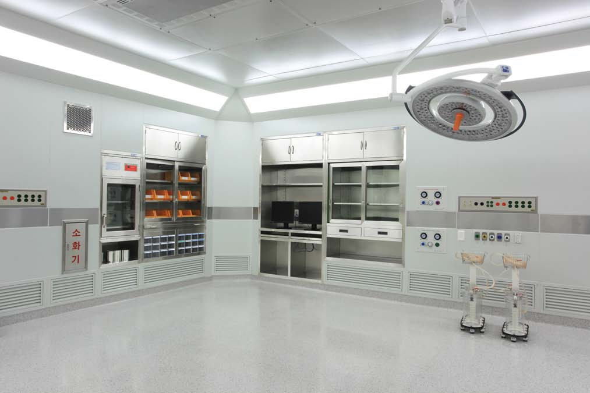
밝고 깨끗한 톤의 수술실. 수술등, 수납장, 소화기 위치. 클린한 이미지 강조용.
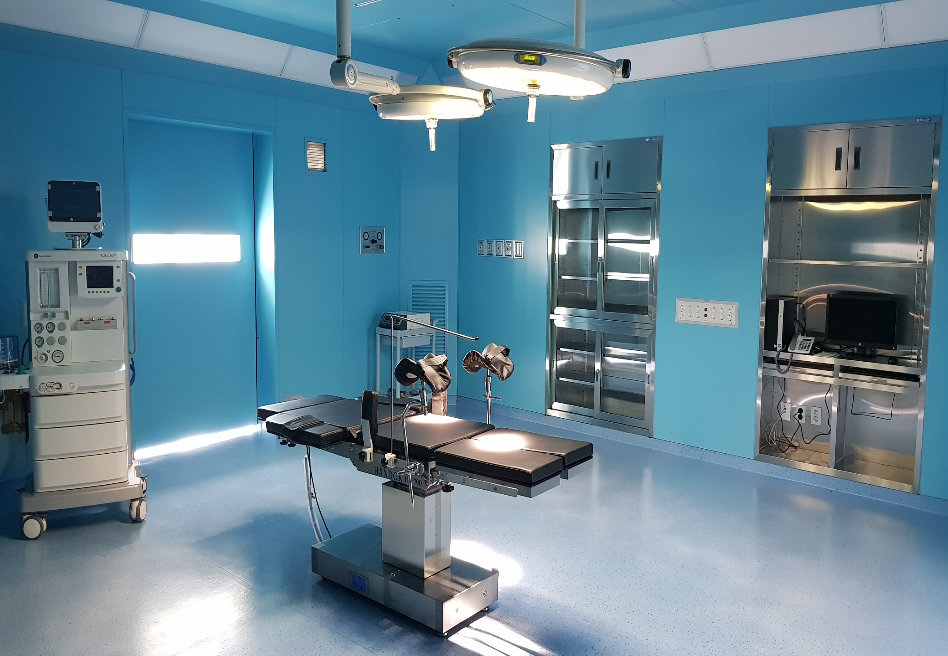
수술대, 마취기, 수술등이 모두 보이는 가동 준비 상태. 실제 운영 느낌. 신뢰도 극대화 이미지.
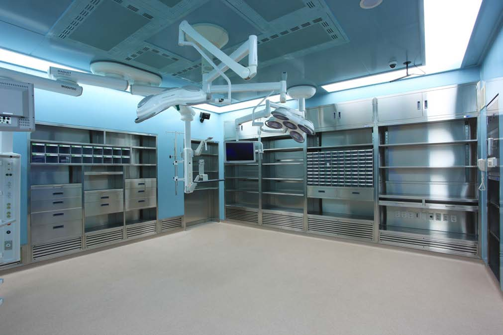
풀 스테인리스 수납장, 수술등, 모니터. 대형 수술실 규모감. 포트폴리오 메인 이미지 후보.
| 웹사이트 영역 | 추천 이미지 | 활용 방법 |
|---|---|---|
| Hero 배경 | 08, 13, 15 | 전경이 넓고 임팩트 있는 완공 사진. 반투명 오버레이 위에 카피 배치. Kling 영상이 준비되면 영상으로 교체. |
| 네비게이션 로고 | 01 (로고 부분 크롭) | 명함 사진에서 로고 영역 크롭. 이상적으로는 SVG 벡터로 재작업 권장. |
| Before-After 슬라이더 | 02↔08, 04↔06 | 철거 현장(02) vs 완공 수술실(08) 동일 앵글이면 최적. 현재 앵글 차이가 있으므로 촬영 시 매칭 고려. |
| 시공 프로세스 | 03→04→05→06 | 폐기물 반출 → 바닥 하도 → 셀프레벨링 → 완공 순서로 타임라인 배치. |
| 서비스 카드 (수술실) | 08, 13 | 서비스 안내 페이지 "수술실" 카드 대표 이미지. |
| 서비스 카드 (중환자실/격리실) | 09 | 복도 출입문 사진을 격리실/중환자실 영역에 활용. 추가 사진 확보 필요. |
| 포트폴리오 그리드 | 06~16 전체 | 시공사례 페이지에서 프로젝트별 썸네일 카드로 활용. 색상 톤별로 프로젝트 구분 가능. |
| 회사소개 페이지 | 01, 08 | 로고 이미지 + 대표 완공 사진을 배경으로 활용. |
| 모바일 OG 이미지 | 13 | SNS 공유 시 표시될 대표 이미지. 가장 임팩트 있는 그린 수술실. |